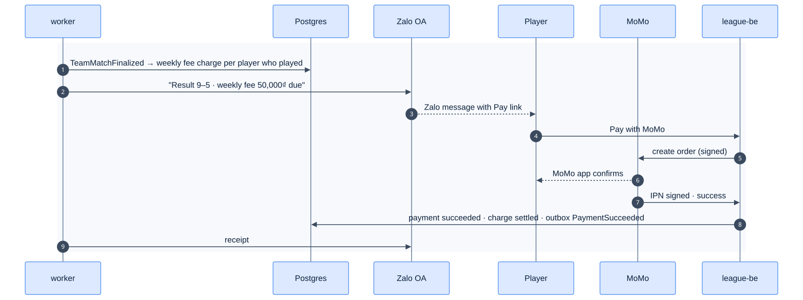
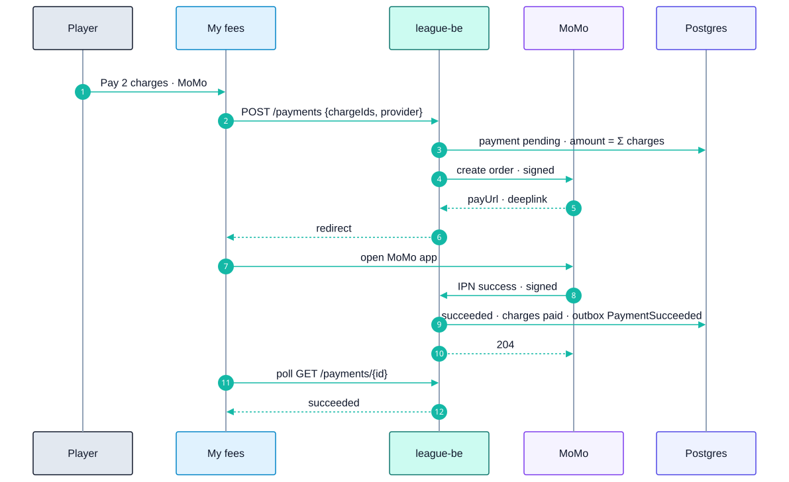
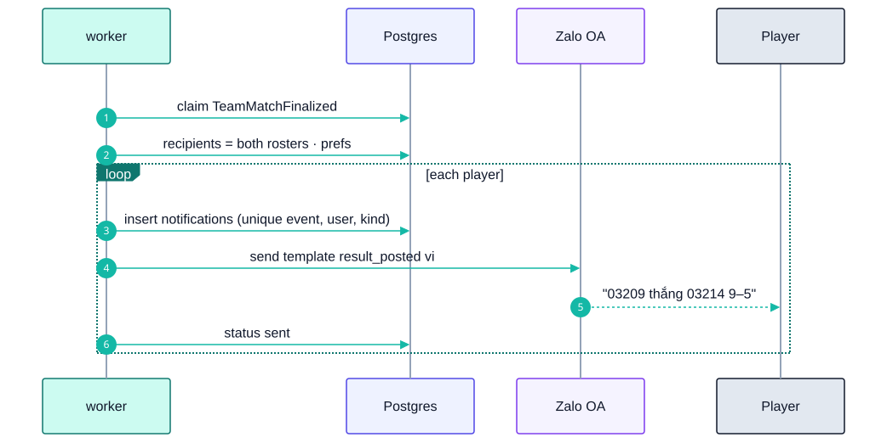

24 - Payments & Notifications
Epic E11 · 2 features
| Goal | Collect membership and weekly fees through the wallets Vietnamese players already use, and reach players where they already are (Zalo) |
| Phase | 2 |
| Status | Target Not started. Phase 1 has only a manual paid flag on membership, set by an admin, which gates put-up and roster adds |
| Actors | Player, Captain, Admin, MoMo / ZaloPay, Zalo Official Account |
| Related | 04 §3 · 11 security · E06-F42 worker |
24.1 Features by phase
24.1.1 Phase 1
A manual paid flag. An admin marks a membership paid after cash or bank transfer, and unpaid players can't be put up.
24.1.2 Phase 2
| # | Feature | Status |
|---|---|---|
| F36 | Fees with MoMo / ZaloPay | Target |
| F40 | Notifications | Target |
24.2 Phase 2 deep dive
24.2.1 Components

24.2.2 Money and message path for one night

24.2.3 Data delta
| Object | Purpose |
|---|---|
| `fee_schedules (division_id, kind membership | weekly, amount_vnd, due_rule)` |
| `fee_charges (id, player_id, team_match_id NULL, kind, amount_vnd, status open | paid |
payments (id, provider, provider_order_id UNIQUE, amount_vnd, status, raw jsonb, charge_ids uuid[]) |
What's paid; the webhook is idempotent on provider_order_id |
memberships.paid |
Becomes derived: paid ⇔ no open membership charge |
notification_prefs (user_id, channel, kind, enabled), notifications (id, user_id, kind, channel, payload, status, sent_at) |
F40 |
24.3 F36 — Fees with MoMo / ZaloPay
| Phase | Status | Rules | Repo refs |
|---|---|---|---|
| 2 | Target | R-014 (paid member) · 11 §7 | Phase 1: memberships.paid flag set by an admin |
24.3.1 Requirements
As a player, I see what I owe and pay it from my phone with MoMo or ZaloPay. As an admin, I see who has paid without chasing cash.
| ID | Requirement |
|---|---|
| FR-36.1 | Fee schedule per division: membership fee (per session) and weekly fee (per night played). Amounts in VND, integers |
| FR-36.2 | Charges are created by events: membership on roster add (RosterChanged), weekly on TeamMatchFinalized for each player who played (forfeiting teams still owe, F39b) |
| FR-36.3 | "My fees" lists open charges and history. Pay selects one or more charges, then the provider |
| FR-36.4 | Create order server-side with the provider's signed API (HMAC-SHA256 with the partner secret from Secret Manager); orderId = <payment uuid>; redirect to the provider deep link or QR |
| FR-36.5 | Webhook (IPN/callback) is the only source of truth: verify the signature, check the amount and order ID, update in one transaction, respond in the provider's format. Idempotent by provider_order_id |
| FR-36.6 | The browser return page only shows "Checking payment…" and polls our API; it never marks anything paid |
| FR-36.7 | A daily reconciliation job queries the provider for orders pending > 15 min |
| FR-36.8 | Admins can record a manual payment (cash or transfer) or waive a charge, with a reason (audited) |
| FR-36.9 | A membership is paid ⇔ it has no open membership charge. The put-up and roster rules keep using that |
| FR-36.10 | Refunds are manual in the provider portal and recorded by the admin in Phase 2 |
24.3.2 Logic: webhook handling

24.3.3 Flow

24.3.4 Edge cases
| ID | Situation | Expected |
|---|---|---|
| EC-36.1 | Webhook arrives twice | The second is a no-op |
| EC-36.2 | Webhook arrives before the browser returns | Normal; the return page sees succeeded |
| EC-36.3 | Charge waived while a payment is pending | The payment still settles; the admin refunds manually; flagged |
| EC-36.4 | User closes MoMo without paying | Stays pending; reconciliation marks it failed or expired |
24.3.5 Acceptance criteria
- AC-36.1 Given a forged webhook, then nothing changes and a security log line exists.
- AC-36.2 Given a successful MoMo sandbox payment, then the charges are paid and the player becomes put-up eligible.
24.3.6 Open questions
- Which provider first, MoMo or ZaloPay? Are the fees per night or per session?
24.4 F40 — Notifications
| Phase | Status | Rules | Repo refs |
|---|---|---|---|
| 2 | Target | 08 §7 | — |
24.4.1 Requirements
As a player, I'm told about my matches, results, fees and skill changes in Zalo, in Vietnamese, without spam. I can turn off what I don't want.
| ID | Requirement |
|---|---|
| FR-40.1 | Channels: Zalo OA / ZNS (primary, needs the user's Zalo ID from F37 and OA follow, or a ZNS template with a phone number), email (fallback), in-app inbox (always) |
| FR-40.2 | Kinds and triggers: below. Each kind has a template per locale (vi, en) and a channel default |
| FR-40.3 | Preferences per user and kind; transactional kinds (payment receipt, dispute) can't be fully disabled; they fall back to in-app |
| FR-40.4 | Sending only from the worker (F42), keyed by (event_id, user_id, kind) so retries never duplicate |
| FR-40.5 | Quiet hours 23:00–08:00 ICT for non-urgent kinds; queued until the morning |
| FR-40.6 | ZNS templates must be pre-approved by Zalo; template IDs live in config |
| FR-40.7 | In-app inbox: bell icon with unread count, list, mark as read |
24.4.2 Kinds
| Kind | Trigger | Who | Urgent |
|---|---|---|---|
match_reminder |
10:00 on match day (scheduler) | Both rosters | No |
verify_request |
TeamMatchSubmitted (E08) |
Both captains | Yes |
result_posted |
TeamMatchFinalized |
Both rosters | No |
dispute_update |
DisputeOpened / Resolved |
Captains, admins | Yes |
fee_due |
Charge created (F36) | The player | No |
payment_receipt |
PaymentSucceeded |
The payer | Yes |
sl_changed |
SkillLevelChanged |
The player | No |
roster_request |
Late add pending (F39c) | Admins | Yes |
24.4.3 Logic: dispatch

24.4.4 Flow

24.4.5 Edge cases
| ID | Situation | Expected |
|---|---|---|
| EC-40.1 | Zalo rejects (user unfollowed the OA) | Mark the channel unreachable; fall back to email next time |
| EC-40.2 | 200 players in one finalize | Batched with a rate limit per Zalo's quota |
| EC-40.3 | Player has no Zalo and no email | In-app only |
24.4.6 Acceptance criteria
- AC-40.1 Given a worker retry after sending, then the player gets one message, not two.
- AC-40.2 Given
sl_changedat 23:30, then it's delivered at 08:00;dispute_updateat 23:30 is sent at once.
24.4.7 Open questions
- Zalo OA account ownership, ZNS budget, and template approval timeline.